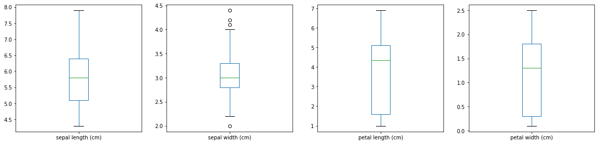
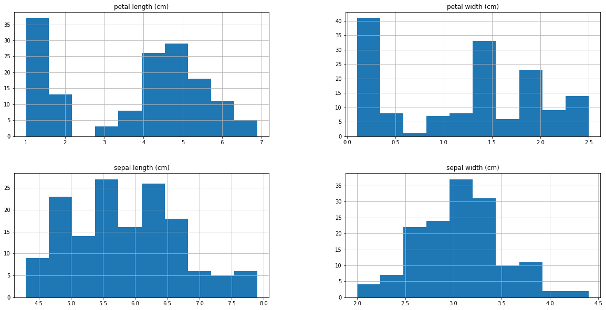
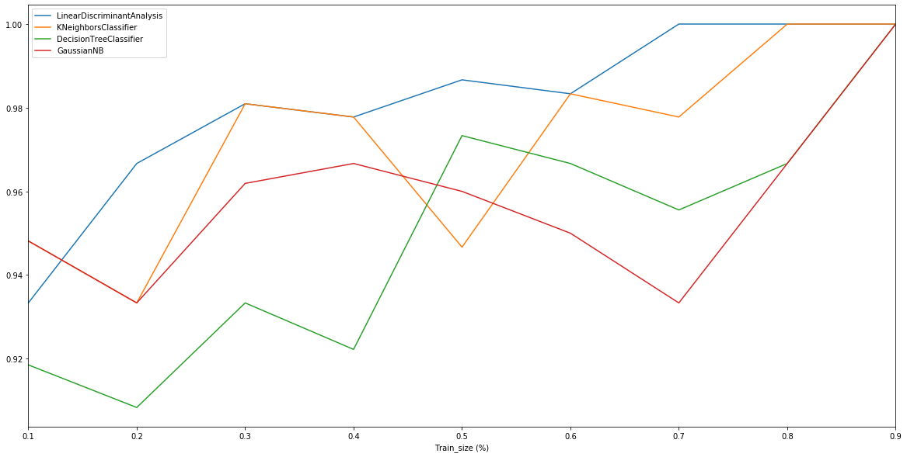

Iris Training
Iris flower data set,
Input:

Output:
from sklearn import datasets from pandas import * import matplotlib.pyplot as plt from pandas.plotting import scatter_matrix from numpy import array from sklearn import model_selection from sklearn.metrics import classification_report, confusion_matrix, accuracy_score from sklearn.linear_model import LogisticRegression from sklearn.tree import DecisionTreeClassifier from sklearn.neighbors import KNeighborsClassifier from sklearn.discriminant_analysis import LinearDiscriminantAnalysis from sklearn.naive_bayes import GaussianNB from sklearn.svm import SVC from IPython.display import HTML, display from tabulate import tabulate def table(df): display(HTML(tabulate(df, tablefmt='html', headers='keys', showindex=False)))
# IRIS iris = datasets.load_iris() print(iris.DESCR)
.. _iris_dataset: Iris plants dataset -------------------- **Data Set Characteristics:** :Number of Instances: 150 (50 in each of three classes) :Number of Attributes: 4 numeric, predictive attributes and the class :Attribute Information: - sepal length in cm - sepal width in cm - petal length in cm - petal width in cm - class: - Iris-Setosa - Iris-Versicolour - Iris-Virginica :Summary Statistics: ============== ==== ==== ======= ===== ==================== Min Max Mean SD Class Correlation ============== ==== ==== ======= ===== ==================== sepal length: 4.3 7.9 5.84 0.83 0.7826 sepal width: 2.0 4.4 3.05 0.43 -0.4194 petal length: 1.0 6.9 3.76 1.76 0.9490 (high!) petal width: 0.1 2.5 1.20 0.76 0.9565 (high!) ============== ==== ==== ======= ===== ==================== :Missing Attribute Values: None :Class Distribution: 33.3% for each of 3 classes. :Creator: R.A. Fisher :Donor: Michael Marshall (MARSHALL%PLU@io.arc.nasa.gov) :Date: July, 1988 The famous Iris database, first used by Sir R.A. Fisher. The dataset is taken from Fisher's paper. Note that it's the same as in R, but not as in the UCI Machine Learning Repository, which has two wrong data points. This is perhaps the best known database to be found in the pattern recognition literature. Fisher's paper is a classic in the field and is referenced frequently to this day. (See Duda & Hart, for example.) The data set contains 3 classes of 50 instances each, where each class refers to a type of iris plant. One class is linearly separable from the other 2; the latter are NOT linearly separable from each other. .. topic:: References - Fisher, R.A. "The use of multiple measurements in taxonomic problems" Annual Eugenics, 7, Part II, 179-188 (1936); also in "Contributions to Mathematical Statistics" (John Wiley, NY, 1950). - Duda, R.O., & Hart, P.E. (1973) Pattern Classification and Scene Analysis. (Q327.D83) John Wiley & Sons. ISBN 0-471-22361-1. See page 218. - Dasarathy, B.V. (1980) "Nosing Around the Neighborhood: A New System Structure and Classification Rule for Recognition in Partially Exposed Environments". IEEE Transactions on Pattern Analysis and Machine Intelligence, Vol. PAMI-2, No. 1, 67-71. - Gates, G.W. (1972) "The Reduced Nearest Neighbor Rule". IEEE Transactions on Information Theory, May 1972, 431-433. - See also: 1988 MLC Proceedings, 54-64. Cheeseman et al"s AUTOCLASS II conceptual clustering system finds 3 classes in the data. - Many, many more ...
# IRIS TRAINING OUTPUT data = [list(s)+[iris.target_names[iris.target[i]]] for i,s in enumerate(iris.data)] dataset = DataFrame(data, columns=iris.feature_names+['class']) table(dataset)
| sepal length (cm) | sepal width (cm) | petal length (cm) | petal width (cm) | class |
|---|---|---|---|---|
| 5.1 | 3.5 | 1.4 | 0.2 | setosa |
| 4.9 | 3 | 1.4 | 0.2 | setosa |
| 4.7 | 3.2 | 1.3 | 0.2 | setosa |
| 4.6 | 3.1 | 1.5 | 0.2 | setosa |
| 5 | 3.6 | 1.4 | 0.2 | setosa |
| 5.4 | 3.9 | 1.7 | 0.4 | setosa |
| 4.6 | 3.4 | 1.4 | 0.3 | setosa |
| 5 | 3.4 | 1.5 | 0.2 | setosa |
| 4.4 | 2.9 | 1.4 | 0.2 | setosa |
| 4.9 | 3.1 | 1.5 | 0.1 | setosa |
| 5.4 | 3.7 | 1.5 | 0.2 | setosa |
| 4.8 | 3.4 | 1.6 | 0.2 | setosa |
| 4.8 | 3 | 1.4 | 0.1 | setosa |
| 4.3 | 3 | 1.1 | 0.1 | setosa |
| 5.8 | 4 | 1.2 | 0.2 | setosa |
| 5.7 | 4.4 | 1.5 | 0.4 | setosa |
| 5.4 | 3.9 | 1.3 | 0.4 | setosa |
| 5.1 | 3.5 | 1.4 | 0.3 | setosa |
| 5.7 | 3.8 | 1.7 | 0.3 | setosa |
| 5.1 | 3.8 | 1.5 | 0.3 | setosa |
| 5.4 | 3.4 | 1.7 | 0.2 | setosa |
| 5.1 | 3.7 | 1.5 | 0.4 | setosa |
| 4.6 | 3.6 | 1 | 0.2 | setosa |
| 5.1 | 3.3 | 1.7 | 0.5 | setosa |
| 4.8 | 3.4 | 1.9 | 0.2 | setosa |
| 5 | 3 | 1.6 | 0.2 | setosa |
| 5 | 3.4 | 1.6 | 0.4 | setosa |
| 5.2 | 3.5 | 1.5 | 0.2 | setosa |
| 5.2 | 3.4 | 1.4 | 0.2 | setosa |
| 4.7 | 3.2 | 1.6 | 0.2 | setosa |
| 4.8 | 3.1 | 1.6 | 0.2 | setosa |
| 5.4 | 3.4 | 1.5 | 0.4 | setosa |
| 5.2 | 4.1 | 1.5 | 0.1 | setosa |
| 5.5 | 4.2 | 1.4 | 0.2 | setosa |
| 4.9 | 3.1 | 1.5 | 0.2 | setosa |
| 5 | 3.2 | 1.2 | 0.2 | setosa |
| 5.5 | 3.5 | 1.3 | 0.2 | setosa |
| 4.9 | 3.6 | 1.4 | 0.1 | setosa |
| 4.4 | 3 | 1.3 | 0.2 | setosa |
| 5.1 | 3.4 | 1.5 | 0.2 | setosa |
| 5 | 3.5 | 1.3 | 0.3 | setosa |
| 4.5 | 2.3 | 1.3 | 0.3 | setosa |
| 4.4 | 3.2 | 1.3 | 0.2 | setosa |
| 5 | 3.5 | 1.6 | 0.6 | setosa |
| 5.1 | 3.8 | 1.9 | 0.4 | setosa |
| 4.8 | 3 | 1.4 | 0.3 | setosa |
| 5.1 | 3.8 | 1.6 | 0.2 | setosa |
| 4.6 | 3.2 | 1.4 | 0.2 | setosa |
| 5.3 | 3.7 | 1.5 | 0.2 | setosa |
| 5 | 3.3 | 1.4 | 0.2 | setosa |
| 7 | 3.2 | 4.7 | 1.4 | versicolor |
| 6.4 | 3.2 | 4.5 | 1.5 | versicolor |
| 6.9 | 3.1 | 4.9 | 1.5 | versicolor |
| 5.5 | 2.3 | 4 | 1.3 | versicolor |
| 6.5 | 2.8 | 4.6 | 1.5 | versicolor |
| 5.7 | 2.8 | 4.5 | 1.3 | versicolor |
| 6.3 | 3.3 | 4.7 | 1.6 | versicolor |
| 4.9 | 2.4 | 3.3 | 1 | versicolor |
| 6.6 | 2.9 | 4.6 | 1.3 | versicolor |
| 5.2 | 2.7 | 3.9 | 1.4 | versicolor |
| 5 | 2 | 3.5 | 1 | versicolor |
| 5.9 | 3 | 4.2 | 1.5 | versicolor |
| 6 | 2.2 | 4 | 1 | versicolor |
| 6.1 | 2.9 | 4.7 | 1.4 | versicolor |
| 5.6 | 2.9 | 3.6 | 1.3 | versicolor |
| 6.7 | 3.1 | 4.4 | 1.4 | versicolor |
| 5.6 | 3 | 4.5 | 1.5 | versicolor |
| 5.8 | 2.7 | 4.1 | 1 | versicolor |
| 6.2 | 2.2 | 4.5 | 1.5 | versicolor |
| 5.6 | 2.5 | 3.9 | 1.1 | versicolor |
| 5.9 | 3.2 | 4.8 | 1.8 | versicolor |
| 6.1 | 2.8 | 4 | 1.3 | versicolor |
| 6.3 | 2.5 | 4.9 | 1.5 | versicolor |
| 6.1 | 2.8 | 4.7 | 1.2 | versicolor |
| 6.4 | 2.9 | 4.3 | 1.3 | versicolor |
| 6.6 | 3 | 4.4 | 1.4 | versicolor |
| 6.8 | 2.8 | 4.8 | 1.4 | versicolor |
| 6.7 | 3 | 5 | 1.7 | versicolor |
| 6 | 2.9 | 4.5 | 1.5 | versicolor |
| 5.7 | 2.6 | 3.5 | 1 | versicolor |
| 5.5 | 2.4 | 3.8 | 1.1 | versicolor |
| 5.5 | 2.4 | 3.7 | 1 | versicolor |
| 5.8 | 2.7 | 3.9 | 1.2 | versicolor |
| 6 | 2.7 | 5.1 | 1.6 | versicolor |
| 5.4 | 3 | 4.5 | 1.5 | versicolor |
| 6 | 3.4 | 4.5 | 1.6 | versicolor |
| 6.7 | 3.1 | 4.7 | 1.5 | versicolor |
| 6.3 | 2.3 | 4.4 | 1.3 | versicolor |
| 5.6 | 3 | 4.1 | 1.3 | versicolor |
| 5.5 | 2.5 | 4 | 1.3 | versicolor |
| 5.5 | 2.6 | 4.4 | 1.2 | versicolor |
| 6.1 | 3 | 4.6 | 1.4 | versicolor |
| 5.8 | 2.6 | 4 | 1.2 | versicolor |
| 5 | 2.3 | 3.3 | 1 | versicolor |
| 5.6 | 2.7 | 4.2 | 1.3 | versicolor |
| 5.7 | 3 | 4.2 | 1.2 | versicolor |
| 5.7 | 2.9 | 4.2 | 1.3 | versicolor |
| 6.2 | 2.9 | 4.3 | 1.3 | versicolor |
| 5.1 | 2.5 | 3 | 1.1 | versicolor |
| 5.7 | 2.8 | 4.1 | 1.3 | versicolor |
| 6.3 | 3.3 | 6 | 2.5 | virginica |
| 5.8 | 2.7 | 5.1 | 1.9 | virginica |
| 7.1 | 3 | 5.9 | 2.1 | virginica |
| 6.3 | 2.9 | 5.6 | 1.8 | virginica |
| 6.5 | 3 | 5.8 | 2.2 | virginica |
| 7.6 | 3 | 6.6 | 2.1 | virginica |
| 4.9 | 2.5 | 4.5 | 1.7 | virginica |
| 7.3 | 2.9 | 6.3 | 1.8 | virginica |
| 6.7 | 2.5 | 5.8 | 1.8 | virginica |
| 7.2 | 3.6 | 6.1 | 2.5 | virginica |
| 6.5 | 3.2 | 5.1 | 2 | virginica |
| 6.4 | 2.7 | 5.3 | 1.9 | virginica |
| 6.8 | 3 | 5.5 | 2.1 | virginica |
| 5.7 | 2.5 | 5 | 2 | virginica |
| 5.8 | 2.8 | 5.1 | 2.4 | virginica |
| 6.4 | 3.2 | 5.3 | 2.3 | virginica |
| 6.5 | 3 | 5.5 | 1.8 | virginica |
| 7.7 | 3.8 | 6.7 | 2.2 | virginica |
| 7.7 | 2.6 | 6.9 | 2.3 | virginica |
| 6 | 2.2 | 5 | 1.5 | virginica |
| 6.9 | 3.2 | 5.7 | 2.3 | virginica |
| 5.6 | 2.8 | 4.9 | 2 | virginica |
| 7.7 | 2.8 | 6.7 | 2 | virginica |
| 6.3 | 2.7 | 4.9 | 1.8 | virginica |
| 6.7 | 3.3 | 5.7 | 2.1 | virginica |
| 7.2 | 3.2 | 6 | 1.8 | virginica |
| 6.2 | 2.8 | 4.8 | 1.8 | virginica |
| 6.1 | 3 | 4.9 | 1.8 | virginica |
| 6.4 | 2.8 | 5.6 | 2.1 | virginica |
| 7.2 | 3 | 5.8 | 1.6 | virginica |
| 7.4 | 2.8 | 6.1 | 1.9 | virginica |
| 7.9 | 3.8 | 6.4 | 2 | virginica |
| 6.4 | 2.8 | 5.6 | 2.2 | virginica |
| 6.3 | 2.8 | 5.1 | 1.5 | virginica |
| 6.1 | 2.6 | 5.6 | 1.4 | virginica |
| 7.7 | 3 | 6.1 | 2.3 | virginica |
| 6.3 | 3.4 | 5.6 | 2.4 | virginica |
| 6.4 | 3.1 | 5.5 | 1.8 | virginica |
| 6 | 3 | 4.8 | 1.8 | virginica |
| 6.9 | 3.1 | 5.4 | 2.1 | virginica |
| 6.7 | 3.1 | 5.6 | 2.4 | virginica |
| 6.9 | 3.1 | 5.1 | 2.3 | virginica |
| 5.8 | 2.7 | 5.1 | 1.9 | virginica |
| 6.8 | 3.2 | 5.9 | 2.3 | virginica |
| 6.7 | 3.3 | 5.7 | 2.5 | virginica |
| 6.7 | 3 | 5.2 | 2.3 | virginica |
| 6.3 | 2.5 | 5 | 1.9 | virginica |
| 6.5 | 3 | 5.2 | 2 | virginica |
| 6.2 | 3.4 | 5.4 | 2.3 | virginica |
| 5.9 | 3 | 5.1 | 1.8 | virginica |
dataset.describe()
| sepal length (cm) | sepal width (cm) | petal length (cm) | petal width (cm) | |
|---|---|---|---|---|
| count | 150.000000 | 150.000000 | 150.000000 | 150.000000 |
| mean | 5.843333 | 3.057333 | 3.758000 | 1.199333 |
| std | 0.828066 | 0.435866 | 1.765298 | 0.762238 |
| min | 4.300000 | 2.000000 | 1.000000 | 0.100000 |
| 25% | 5.100000 | 2.800000 | 1.600000 | 0.300000 |
| 50% | 5.800000 | 3.000000 | 4.350000 | 1.300000 |
| 75% | 6.400000 | 3.300000 | 5.100000 | 1.800000 |
| max | 7.900000 | 4.400000 | 6.900000 | 2.500000 |
dataset.groupby('class').size()
class setosa 50 versicolor 50 virginica 50 dtype: int64
dataset.plot(kind='box', subplots=True, layout=(2,4), figsize=(20,10), sharex=False, sharey=False) plt.show()

# histograms dataset.hist(figsize=(20,10)) plt.show()

scatter_matrix(dataset, figsize=(20,10)) plt.show()

# Split-out validation dataset array = dataset.values X = array[:,0:4] Y = array[:,4]
# Make predictions on validation dataset seed = 1 def do_training(train_size, classifierC): X_train, X_validation, Y_train, Y_validation = \ model_selection.train_test_split(X, Y, \ train_size=train_size, random_state=seed) classifier = classifierC() classifier.fit(X_train, Y_train) p = classifier.predict(X_validation) return accuracy_score(Y_validation, p) trainset = [[ s/10, do_training(s/10, LinearDiscriminantAnalysis), do_training(s/10, KNeighborsClassifier), do_training(s/10, DecisionTreeClassifier), do_training(s/10, GaussianNB), ] for s in range(1,10,1)] print("Training Size & Classifier comparison at seed =", seed) trainframe = DataFrame(trainset, columns=["Train_size (%)", "LinearDiscriminantAnalysis", "KNeighborsClassifier", "DecisionTreeClassifier", "GaussianNB"]) trainframe.plot(x ='Train_size (%)', figsize=(20,10)) table(trainframe)
Training Size & Classifier comparison at seed = 1
| Train_size (%) | LinearDiscriminantAnalysis | KNeighborsClassifier | DecisionTreeClassifier | GaussianNB |
|---|---|---|---|---|
| 0.1 | 0.933333 | 0.948148 | 0.918519 | 0.948148 |
| 0.2 | 0.966667 | 0.933333 | 0.908333 | 0.933333 |
| 0.3 | 0.980952 | 0.980952 | 0.933333 | 0.961905 |
| 0.4 | 0.977778 | 0.977778 | 0.922222 | 0.966667 |
| 0.5 | 0.986667 | 0.946667 | 0.973333 | 0.96 |
| 0.6 | 0.983333 | 0.983333 | 0.966667 | 0.95 |
| 0.7 | 1 | 0.977778 | 0.955556 | 0.933333 |
| 0.8 | 1 | 1 | 0.966667 | 0.966667 |
| 0.9 | 1 | 1 | 1 | 1 |
